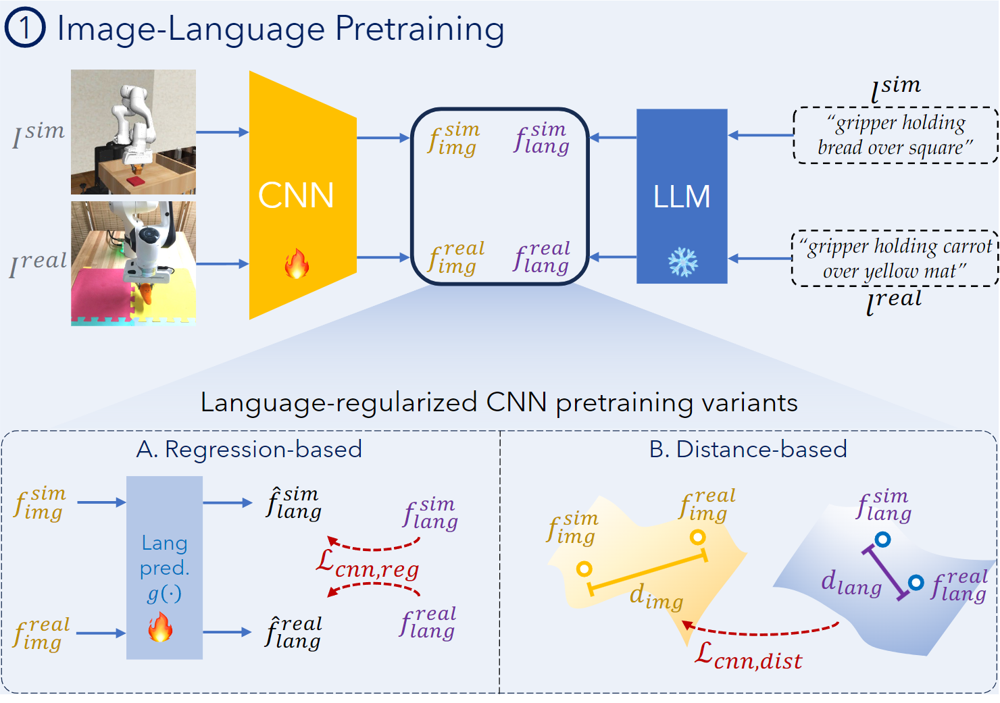
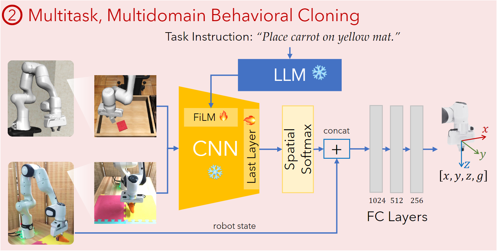
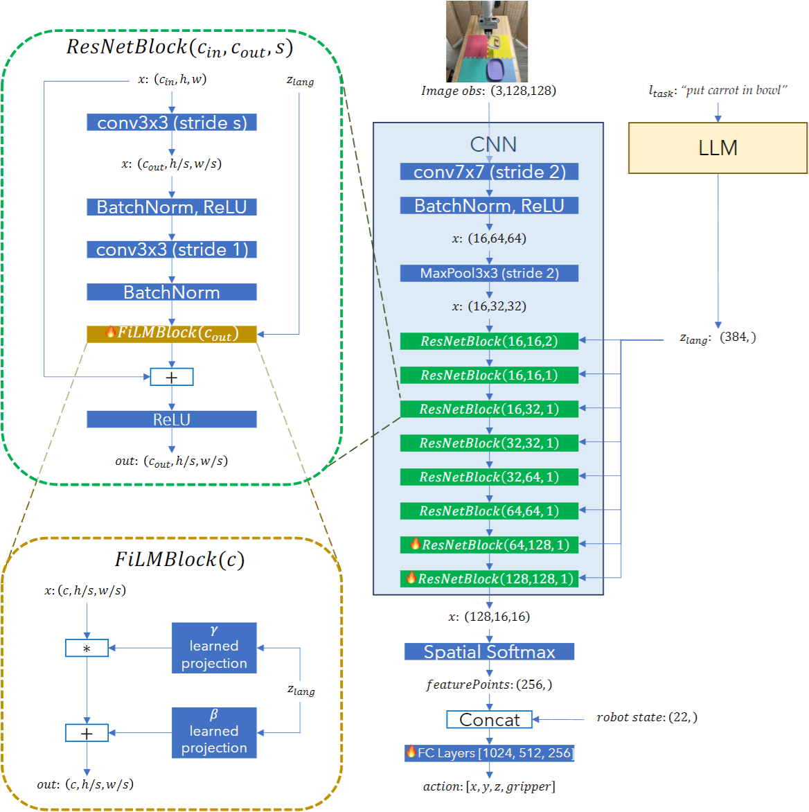

Lang4Sim2Real
Data Collection
Two dataset across source (simulation) and target domain (reality) are accessible for few-shot visual IL
| Dataset |
Domain |
Scale |
Collection Cost |
| Ds |
Source (Simulation) |
Multiple Tasks + Large Scale |
Cheap |
| Dtargett |
Target (Reality) |
Single Task + Small Scale |
Expensive |
Both of datasets are in the form of expert trajectories τ={st, ot, lt, at∣ltask}t=0T, which are made up of
- robot proprioceptive state st
- image (RGB) observation ot
- language description of observation lt
- robot action at
- language task instruction ltask
The language descriptions lt on image observation can be labeled automatically through
- online annotation: scripted-policy + description templates
- offline annotation: raw trajectories + off-the-shelf VLMs
Image-Language Pretraining
The language descriptions can be further used for the learning of domain-invariant visual representation

Instead of using pretrained VLMs, Lang4Sim2Real leverages language as supervision for image encoder fcnn
Regression
The language embedding flang(lt) can be used to shape the image embedding space through regression
fcnn, gminE(ot, lt)∼Ds∪Dtargett∥∥∥∥g(fcnn(ot))−flang(lt)∥∥∥∥22
where the temporary adaptor g:Rdcnn↦Rdlang is trainable. This objective effectively encourages the image encoder to reflect the LLM embedding space and extract task-relevant, semantic aspects of the image
Contrastive Learning
The other variant adopts the contrastive learning paradigm with the distance of language as similarity
fcnnminE(os, ls)∼Ds∪DtargettE(ot, lt)∼Ds∪Dtargett[∥fcnn(os)∥⋅∥fcnn(ot)∥fcnn(os)⋅fcnn(ot)−d(ls, lt)]2
where d(⋅, ⋅) is BLEURT distance normalized into [0, 1] across all possible (ls, lt) pairs in the dataset
Multi-Task / Domain BC
Based on the learned domain-invariant representation, the policy is trained to maximize the log-likelihood
θmaxE(st, ot, at∣ltask)∼Ds∪Dtargett[logπθ(at∣st, fcnn(ot), ltask)]

In the policy network, the image encoder fcnn (ResNet18) is substantially frozen and combined with the task instruction embedding through FiLM. The output action is predicted with image embedding and robot state
